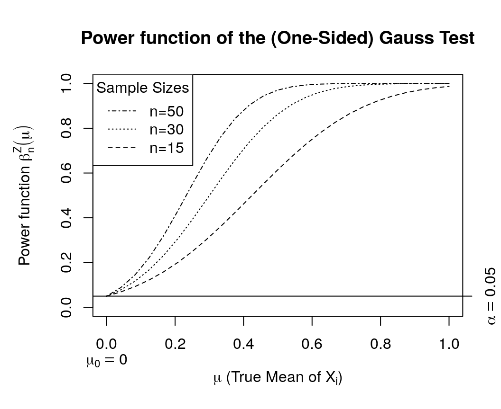
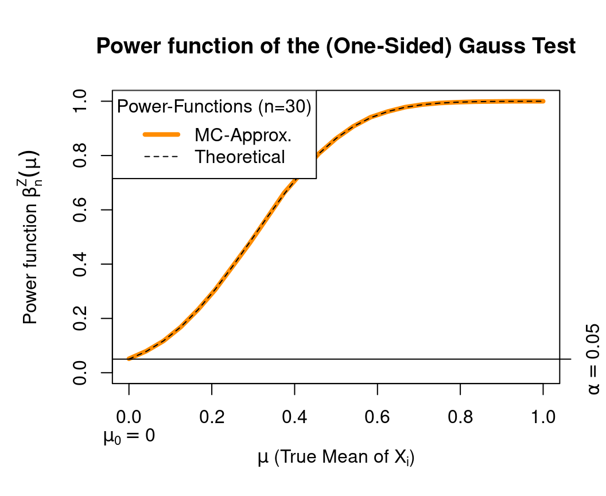
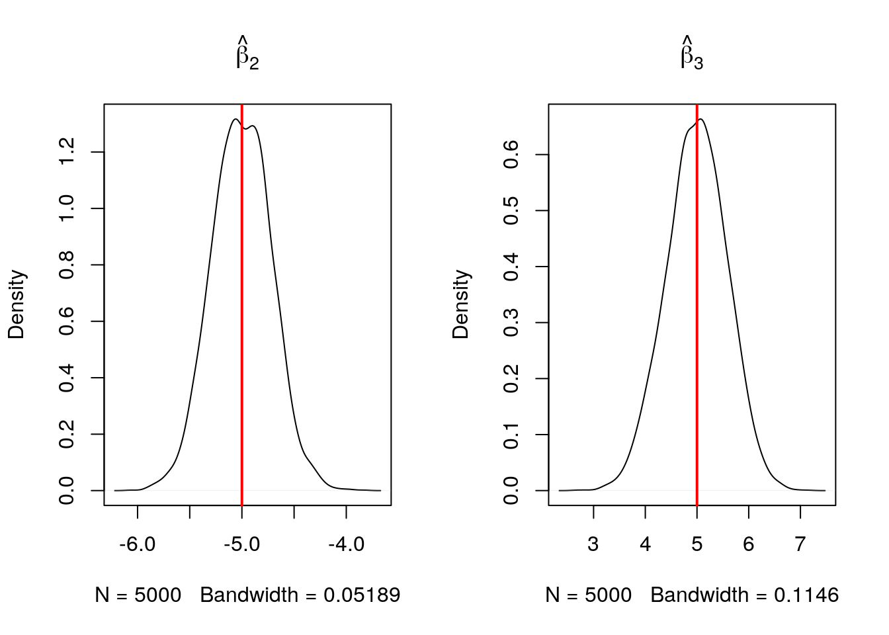

Ch. 5 Monte-Carlo Simulations
5.1 Checking Test Statistics
5.1.1 Simple Example: Gauss Test
First, we repeat some of the things we already know about the Gauss test statistic \(Z=\frac{\sqrt{n}(\bar{X}-\mu_{X,0})}{\sigma_X}\) from Chapter.
Let us consider the simple case of the one-sided Gauss (or Z) test statistic under the following following setup:
- \(X_1,\dots,X_n\) i.i.d. random sample with \(X_i\sim N(\mu_X,\sigma_X^2)\) and \(\sigma_X^2=1\)
- \(\alpha=0.05\) (Significance level)
- \(n\in\{15,30,50\}\) (Different sample sizes)
- \(\mu_{X,0}=0\), i.e., \(\Omega_0=\{0\}\) and \(\Omega_1=]0,\infty[\).
Under the above setup, we know the theoretical power function: \[ \begin{array}{rcl} \beta^{Z}_{n,\alpha}(\mu_X) &=&\mathbb{P}(Z \geq z_{1-\alpha})\\ &=&1-\mathbb{P}(Z < z_{1-\alpha})\\ &=&1-\Phi_{\mu_Z,\sigma^2_Z}(z_{1-\alpha}), \end{array} \] where \(\Phi_{\mu_Z,\sigma_Z^2}\) denotes the distribution function of a Gaussian distribution with mean and variance: \[ \begin{array}{rcl} \mu_Z&=&\frac{\sqrt{n}(\mu_X-\mu_{X,0})}{\sigma_X} \,=\,\sqrt{n}(\mu_X-0)\\ \sigma^2_Z&=&1. \end{array} \] Furthermore, \(z_{1-\alpha}=z_{0.95}\) is the 95% quantile of a standard normal distribution.
Computation in R: This is how you can use R in order to compute \(\beta^{Z}_{n,\alpha}(\mu_X)=1-\Phi_{\mu_Z,1}(z_{1-\alpha})\):
Gauss.beta <- function(n, # sample size
alpha=0.05, # significance level
mu.X.true=0, # The true mean of X_i
mu.X.null=0, # The null-hypothesis mean of X_i
var.X =1 # The assumed known var of X_i
){
## Critical value:
z_crit <- qnorm(1-alpha, mean=0, sd=1)
## Power:
Phi <- pnorm(q = z_crit,
mean = sqrt(n)*(mu.X.true - mu.X.null)/sqrt(var.X),
sd = 1)
power <- 1- Phi
## Return result:
return(power)
}For our purposes, it is convenient to vectorize the Gauss.beta() function with respect to its argument mu.X.true:
## Vectorization with respect to the argument `mu.X.true`:
Gauss.beta <- Vectorize(FUN=Gauss.beta, vectorize.args = "mu.X.true")Plot:
The function Gauss.beta() allows us now to easily produce a plot of the trajectories of the power function
\(\beta^{Z}_{n,0.05}(\mu_X)\) for \(\mu_X\in\Omega_0\cup\Omega_1\) and for the different sample sizes \(n\in\{15,30,50\}\).
Here is the R-Code to do this:
## Sequence of different mu_X values (here from 0 to 1):
mu.X.true.seq <- seq(0,1,len=25)
## Trajectories of the power function for different sample sizes:
## n=15
beta.n.15 <- Gauss.beta(n=15, mu.X.true=mu.X.true.seq)
## n=30
beta.n.30 <- Gauss.beta(n=30, mu.X.true=mu.X.true.seq)
## n=50
beta.n.50 <- Gauss.beta(n=50, mu.X.true=mu.X.true.seq)
## Plot
par(mar=c(5.1,4.1+1,4.1,2.1))
plot(y=0, x=0, type="n",
ylim=c(0,1),
xlim=range(mu.X.true.seq),
xlab=expression(paste(mu," (True Mean of ", X[i],")")),
## Labels:
ylab=expression(paste("Power function ",beta[n]^Z,(mu))),
main="Power function of the (One-Sided) Gauss Test")
## Null-hypothesis mean:
mtext(text = expression(mu[0]==0), side = 1, line = 2, at = 0)
## Trajectories:
lines(y=beta.n.15, x=mu.X.true.seq, lty=2)
lines(y=beta.n.30, x=mu.X.true.seq, lty=3)
lines(y=beta.n.50, x=mu.X.true.seq, lty=4)
## Significance Level:
axis(4, at=0.05, labels = expression(alpha==0.05))
abline(h=0.05, lty=1)
## Legend:
legend("topleft", title = "Sample Sizes",
legend = c("n=50","n=30","n=15"),
lty=c(4:2))
5.1.2 Simulated Power Function
The power function is best suited to compare several test statistics with each other. Very often, however, it is impossible to compute the power function \(\beta_{n,\alpha}(\theta)\) analytically. (The Gauss test is a rare exception.) The reason for this is that we often know only the distribution of a test statistic under the null hypothesis, but not under the alternative hypothesis. In fact, things can be even worse: Very often, we only know the asymptotic distribution of a test statistic under the null hypothesis. That is, the null distribution is only known for the limiting case of \(n\to\infty\).
Solution: Use Monte-Carlo Simulations in order approximate the power function.
For the sake of simplicity let’s approximate the power function \(\beta^Z_{n,\alpha}(\theta)\) of the one-sided Gauss-Test. This has the (didactic) advantage that we can compare our MC-approximated power function with the theoretical power function.
General Idea: MC-Simulations make use of the Law of Large Numbers. For instance, by the Strong Law of Large Numbers we know that the empirical mean \[\bar{X}_m\to_{(a.s)}\mu_X\] converges almost surely (a.s.) to the desired limit \(\mathbb{E}(X)=\mu_X\) as \(m\to\infty\). The only prerequisites are that \(X\) has finite first moments, i.e., \(\mathbb{E}(X)=\mu_X<\infty\), and that \(\bar{X}_m\) is constructed from an i.i.d. sample \(X_1,\dots,X_m\). That is, MC-Simulations use averages in order to approximate mean values.
Approximating a Power Function (Theory):
Remember that \[ \begin{array}{rcl} \beta^{Z}_{n,\alpha}(\mu_X) &=&\mathbb{P}(Z \geq z_{1-\alpha}). \end{array} \]
Let us rewrite this probability using the following binary random variable: \[ V=1_{(Z \geq z_{1-\alpha})}, \] where \(1_{(\text{TRUE})}=1\) and \(1_{(\text{FALSE})}=0\). Then we have that \[ \begin{array}{rcl} \beta^{Z}_{n,\alpha}(\mu_X) &=&\mathbb{P}(Z \geq z_{1-\alpha})\,=\,\mathbb{E}(V), \end{array} \] since \[ \begin{array}{rcl} \mathbb{E}(V)&=&\underbrace{\mathbb{P}(V=1)}_{\mathbb{P}(Z \geq z_{1-\alpha})\cdot 1}+\underbrace{\mathbb{P}(V=0)\cdot 0}_{=0}.%\,=\,\mathbb{P}(Z \geq z_{1-\alpha}). \end{array} \]
Now we have an expression for the power function \(\beta^{Z}_{n,\alpha}(\mu_X)\) in terms of the population mean \(\mathbb{E}(V)\).
By the Law of Large Numbers we know that we can use averages of i.i.d. random variables in order to approximate their population mean. That is, \[ \frac{1}{m}\sum_{j=1}^m V_j\to_{(a.s)}\mathbb{E}(V)\quad\text{as}\quad m\to\infty, \] where \((V_1,\dots,V_m)\) is an iid random sample with \(V_j\sim V=1_{(Z \geq z_{1-\alpha})}\). This approximation can be made arbitrarily accurate as \(m\to\infty\).
The MC-Simulation proceeds as following:
- Choose a large number \(m\), for instance, \(m=50,000\).
- Generate realizations \[ (v_1,\dots,v_m) \] from the MC random sample \[ (V_1,\dots,V_m)=(1_{(Z_1 \geq z_{1-\alpha})},\dots,1_{(Z_m \geq z_{1-\alpha})}) \]
- Approximate \(\mathbb{E}(V)=\beta^{Z}_{n,\alpha}(\mu_X)\) using the empirical means. \[ \frac{1}{m}\sum_{j=1}^m v_j. \]
Approximating a Power Function (Practice):
Let’s start with approximating only the following value of the power function for the one-sided Gauss-Test: \[ \beta^{Z}_{n=15,\alpha=0.05}(0.5)=0.6147. \]
First, we set the Monte-Carlo sample size to \(m=50,000\).
Second, we need a realization from the random sample \[ (1_{(Z_1 \geq z_{1-\alpha})},\dots,1_{(Z_m \geq z_{1-\alpha})}). \] In R you can do this as following:
set.seed(1009)
## Setup:
n <- 15 # Sample Size
alpha <- 0.05 # Significance Level
mu.X.true <- 0.5 # The (usually unknown) true mean of X_i
mu.X.null <- 0 # The null-hypothesis mean of X_i
var.X <- 1 # The (assumed known) var of X_i
## Critical value:
z_crit <- qnorm(1-alpha, mean=0, sd=1)
## Number of Monte-Carlo Repetitions:
m <- 50000
## Container for Z-realizations:
Z <- rep(NA, m)
## MC-Experiments:
for(j in 1:m){
## Generate X-sample:
X.sample <- rnorm(n=n, mean=mu.X.true, sd=sqrt(var.X))
## Compute jth realization of Z:
Z[j] <- sqrt(n)*(mean(X.sample) - mu.X.null)/sqrt(var.X)
}
## Check Z>=z_crit:
head(Z >= z_crit)## [1] TRUE TRUE TRUE FALSE FALSE TRUE## [1] 1 1 1 0 0 1Third, we need to compute the average \[ \frac{1}{m}\sum_{j=1}^m 1_{(Z_j \geq z_{1-\alpha})} \] with respect to the simulated realizations \(1_{(Z_1 \geq z_{1-\alpha})},\dots,1_{(Z_m \geq z_{1-\alpha})}\).
In R you can do this as following:
## [1] 0.6139Observe that this approximation is really close to the true value:
\(\beta^{Z}_{n=15,\alpha=0.05}(0.5)\,=\,0.6147 =\) Gauss.beta(n=15, mu.X.true=0.5).
We can write all this as a practical R function Gauss.MC.beta():
Gauss.MC.beta <- function(
n = 15, # Sample Size
alpha = 0.05, # Significance Level
mu.X.true = 0.5, # The (usually unknown) true mean of X_i
mu.X.null = 0, # The null-hypothesis mean of X_i
var.X = 1, # The (assumed known) var of X_i
##
m = 50000 # Number of Monte-Carlo Repetitions:
){
## Critical value:
z_crit <- qnorm(1-alpha, mean=0, sd=1)
## Container for Z-realizations:
Z <- rep(NA, m)
## MC-Experiments:
for(j in 1:m){
## Generate X-sample:
X.sample <- rnorm(n=n, mean=mu.X.true, sd=sqrt(var.X))
## Compute jth realization of Z:
Z[j] <- sqrt(n)*(mean(X.sample) - mu.X.null)/sqrt(var.X)
}
## MC-Approx Power
MC.power <- mean(c(as.numeric(Z >= z_crit)))
##
return(MC.power)
}
## Vectorization:
Gauss.MC.beta <- Vectorize(FUN=Gauss.MC.beta, vectorize.args = "mu.X.true")Plot:
The function Gauss.MC.beta() allows us now to compare the theoretical trajectory of the power function
\(\beta^{Z}_{n,0.05}(\mu_X)\) for \(\mu_X\in\Omega_0\cup\Omega_1\), e.g., for the sample size \(n=30\) with its simulated counterpart.
Here is the R-Code to do this:
## Sequence of different mu_X values (here from 0 to 1):
mu.X.true.seq <- seq(0,1,len=25)
## Simulating the trajectory of the power function for n=30:
## Number of MC-Repetitions:
m <- 50000
## Try also:
## m <- 100
beta.MC.n.30 <- Gauss.MC.beta(n = 30,
mu.X.true = mu.X.true.seq,
m = m)
## Plot
par(mar=c(5.1,4.1+1,4.1,2.1))
plot(y=0, x=0, type="n",
ylim=c(0,1),
xlim=range(mu.X.true.seq),
xlab=expression(paste(mu," (True Mean of ", X[i],")")),
## Labels:
ylab=expression(paste("Power function ",beta[n]^Z,(mu))),
main="Power function of the (One-Sided) Gauss Test")
## Null-hypothesis mean:
mtext(text = expression(mu[0]==0), side = 1, line = 2, at = 0)
## Trajectories:
lines(y=beta.MC.n.30, x=mu.X.true.seq, lty=1, lwd=4, col="darkorange")
lines(y=beta.n.30, x=mu.X.true.seq, lty=2)
## Significance Level:
axis(4, at=0.05, labels = expression(alpha==0.05))
abline(h=0.05, lty=1)
## Legend:
legend("topleft", title = "Power-Functions (n=30)",
legend = c("MC-Approx.","Theoretical"),
lty=c(1:2), lwd=c(4,1), col=c("darkorange","black"))
5.2 Checking Parameter Estimators
For the following, we use our myOLSFun() function to compute OLS estimators.
myOLSFun <- function(y, x, add.intercept=FALSE){
## Number of Observations:
n <- length(y)
## Add an intercept to x:
if(add.intercept){
Intercept <- rep(1, n)
x <- cbind(Intercept, x)
}
## Estimation of the slope-parameters:
beta.hat.vec <- solve(t(x) %*% x) %*% t(x) %*% y
## Return the result:
return(beta.hat.vec)
}Let us consider the multiple regression model:
\[y_i=\beta_1 +\beta_2 x_{2i}+\beta_3 x_{3i}+\varepsilon_{i},\quad i=1,\dots,n,\] where \(\varepsilon_{i}\) is a heteroscedastic error term \[\varepsilon_{i}\sim N(0,\sigma_i^2),\quad \sigma_i=x_{3i},\]
and where:
- \(i=1,\dots,n\) with \(n=50\)
- \(\beta_1=1\), \(\beta_2=-5\), and \(\beta_3=5\)
- \(x_{2i}\sim N(10,1.5^2)\)
- \(x_{3i}\) comes from a t-distribution with 5 degrees of freedom and non-centrality parameter 2
This following code generates:
m <- 5000(pseudo) random samples from the above model.- Computes the OLS estimates \(\hat{\beta}_{2j}\) and \(\hat{\beta}_{3j}\) for each sample \(j=1,\dots,m\)
- Stores the estimation results in the data-vectors
beta.2.simandbeta.3.sim - Plots the distribution of the estimation results using non-parametric density plots
## Simulation parameters:
set.seed(109) # Sets the "seed" of the random number generators
m <- 5000 # Number of simulation runs
## Model parameters:
beta.vec <- c(1,-5,5) # Slope coefficients
n <- 50 # Number of observations
## Containers to save simulation results:
beta.2.sim <- rep(NA,m)
beta.3.sim <- rep(NA,m)
## Generate the regressors:
## Outside of the loop (i.e., 'conditional on X')
X.1 <- rep(1, n)
X.2 <- rnorm(n, mean=10, sd=1.5) # Draw realizations form a normal distr.
X.3 <- rt(n, df=5, ncp=2) # Draw realizations form a t-distr.
X <- cbind(X.1, X.2, X.3) # Save as a Nx3-dimensional matrix.
## Setup a progressbar
#pb <- txtProgressBar(min = 0, max = m, style = 3)
for(rpt in 1:m){
eps <- (X.3)*rnorm(n, mean=0, sd=1) # heteroscadastic error term
y <- X %*% beta.vec + eps # Dependent variable
## Estimation
beta.hat <- myOLSFun(y=y,x=X)
## Save results
beta.2.sim[rpt] <- beta.hat[2]
beta.3.sim[rpt] <- beta.hat[3]
## Progress bar
#setTxtProgressBar(pb, rpt)
}
#close(pb)# Close progressbar
# Theoretical variance covariance matrix of \hat{beta}
Var_beta_mat <- solve(t(X)%*%X) %*% t(X) %*% diag((X.3)^2) %*% X %*% solve(t(X)%*%X)
## Plot results
par(mfrow=c(1,2))
hist(beta.2.sim, prob=TRUE, main=expression(hat(beta)[2]), ylim=c(0,1.55))
curve(dnorm(x, mean=beta.vec[2], sd=sqrt(Var_beta_mat[2,2])),
col="darkblue", lwd=2, add=TRUE, yaxt="n")
hist(beta.3.sim, prob=TRUE, main=expression(hat(beta)[3]), ylim=c(0,.75))
curve(dnorm(x, mean=beta.vec[3], sd=sqrt(Var_beta_mat[3,3])),
col="darkblue", lwd=2, add=TRUE, yaxt="n")